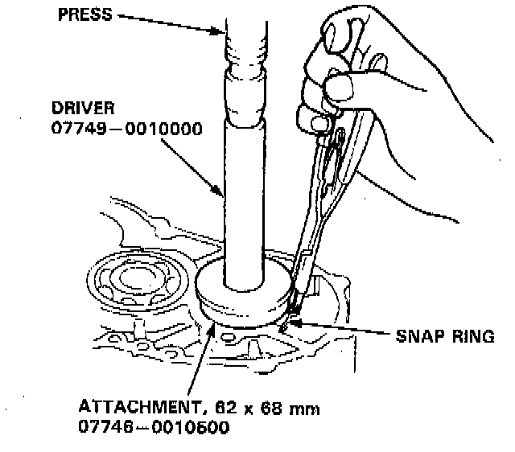
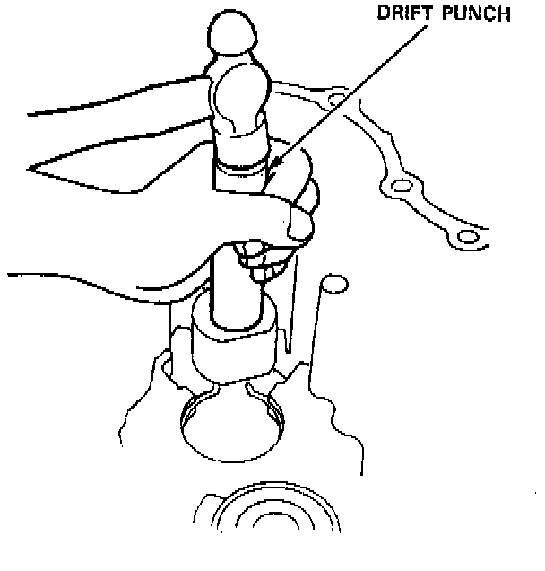
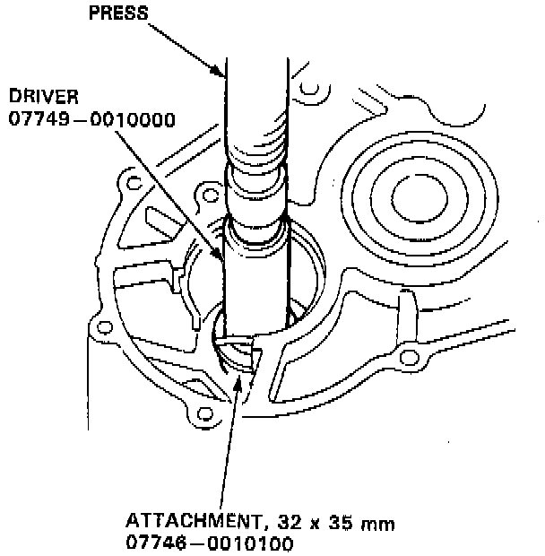
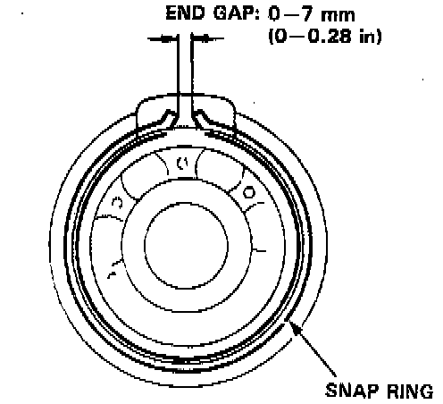

Bearing Replacement
TOOLS REQUIRED- 07749-0010000 Driver
- 07746-0010500 Attachment, 62 x 68 mm
- 07746-0010100 Attachment, 32 x 35 mm
- Or Equivalent
NOTE: Lubricate all parts with ATF before reassembly.

1. To remove the sub-shaft ball bearing from the transmission housing, expand the snap ring with snap ring pliers, then push the bearing out using the special tools and a press as shown.
2. Remove the needle bearing stopper.

3. Remove the needle bearing from the transmission housing using a drift punch.

4. Install the new needle bearing in the transmission housing using the special tools and a press as shown.
5. Expand the snap ring with snap ring pliers, then insert the ball bearing part-way into the housing using the special tools and a press as described in step 1. Install the bearing with the groove facing outside the housing.
6. Release the pliers, then push the bearing down into the housing until the snap ring snaps in place around it.

7. After installing the ball bearing, verify the following:
- The snap ring is seated in the bearing and housing grooves.
- The snap ring operates properly.
- The ring end gap is correct.